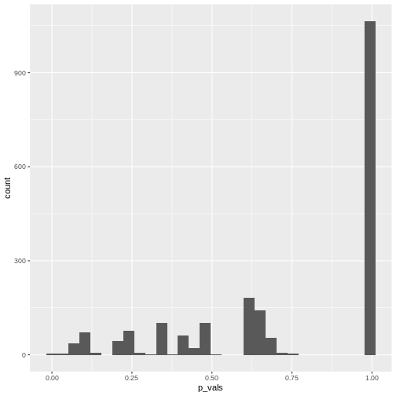

Categorical data and statistical power
Last updated on 2025-03-13 | Edit this page
Estimated time: 10 minutes
Overview
Questions
- What determines the power of a chi-square test?
- Why is it difficult to determine significance for discrete data?
- What is the Fisher test and when should I use it?
Objectives
- Introduce Fisher’s exact test.
- Explain difficulties with significance testing for discrete p-values.
Statistical power
Statistical power is the probability that an effect is detected as significant with a given method, provided that the effect really exists.
In the lesson on hypothesis testing, we learned that the power depends on
- the size of the effect,
- the significance level,
- the method we choose for testing, and
- the sample size.
In this lesson’s example, the estimated association is not quite small (\(6\%\) difference in proportions, or the risk for getting the disease is more than twice as high for exposed mice), the significance level was the usual \(5\%\), and a sample size of 200 doesn’t seem small, either. Still, the effect is not significant. Does this mean that the \(\chi^2\)-test is useless?
They key here is the low overall probability of mice contracting the disease. Even though there were 200 mice, only a total of 14 out of them actually contracted the disease. And it’s this low number of cases that limits the power of the study.
In fact, if there was a sample of 2000 mice, and only 14 of them caught the disease, then the p-value would hardly change:
R
chisq.test(rbind(
c(4,996),
c(10,990)),
correct=FALSE)
OUTPUT
Pearson's Chi-squared test
data: rbind(c(4, 996), c(10, 990))
X-squared = 2.5896, df = 1, p-value = 0.1076Intuitively, we still have 14 cases, and the question is how we’d expect them to distribute among the two groups (exposure and no exposure) by chance.
Thus, the power of the study is limited by the lowest counts in the table. We could also say that extreme frequencies (a low probability of one outcome always corresponds to a high probability of the other outcome) are unfavorable in terms of power. To overcome the problem of a low number of cases, clinical studies are often conducted as case-control studies. In those, the same number of cases and controls are sampled by design. One can then compare the occurrence of certain risk factors (e.g. smoking, exposure, …) between the two groups.
The Fisher test
There is another test, called Fisher test, which is also used on contingency tables, and which tests exactly the same hypothesis as the \(\chi^2\) test. It doesn’t sum up the differences between observed and expected counts, but instead calculates the probability of the observed data using a hypergeometric distribution. The hypergeometric distribution is similar to the multinomial distribution (except that it assumes draws without replacement) and gives exact probabilities for counts to fall into different categories (in this case the cells of the table) under the assumption of independence. See here for more details on the Fisher test.
Apply the Fisher test
Consider the table we’ve been looking at throughout this lesson.
| diseased | healthy | |
|---|---|---|
| not exposed | 4 | 96 |
| exposed | 10 | 90 |
Look up the help for fisher.test. Can you apply this
test on the above data? How do you interpret the result? How does it
compare to the outcome of the \(\chi^2\) test?
R
fisher.test(rbind(c(4,96), c(10,90)))
OUTPUT
Fisher's Exact Test for Count Data
data: rbind(c(4, 96), c(10, 90))
p-value = 0.164
alternative hypothesis: true odds ratio is not equal to 1
95 percent confidence interval:
0.08322597 1.36465456
sample estimates:
odds ratio
0.3767541 The p-value for the Fisher test is higher than for the \(\chi^2\) test (without correction), but
almost identical to the \(\chi^2\) test
with Yates continuity correction (see below). The conclusion stays the
same: Not significant at \(\alpha=0.05\). The fisher.test
function also gives an odds ratio \(\approx
0.37\). The part that I don’t like about this output is that we
have to guess which odds are being compared. If you look up the measures for
association, you’ll notice that the calculated odds ratio for the
same table was \(\approx 2.7\). There
we looked at the odds of getting the disease in case of exposure,
relative to non-exposure, because this seemed natural. In the
fisher.test function, the ratio was calculated the other
way round. We could change this by switching the rows of the table:
R
fisher.test(rbind(c(10,90),c(4,96)))
OUTPUT
Fisher's Exact Test for Count Data
data: rbind(c(10, 90), c(4, 96))
p-value = 0.164
alternative hypothesis: true odds ratio is not equal to 1
95 percent confidence interval:
0.7327862 12.0154803
sample estimates:
odds ratio
2.654251 Alternatively, we can calculate the inverse of the result:
R
1/0.3767
OUTPUT
[1] 2.654632If you do your research on which test to use (e.g. ask google),
you’ll stumble upon statements like “the Fisher test is more
conservative”, or “the \(\chi^2\)-test
overestimates significance for small counts”. What does this mean? These
statements both concern errors in hypothesis testing: If the Fisher test
is conservative, this means that it is prone to failing to detect cases
where an effect exists, i.e. it has a low power. On the other hand, if
the \(\chi^2\)-test overestimates
significance, then we have a problem with false positives.
In the next sections, we’ll learn why p-values are a bit tricky to
interpret for categorical data, and how this leads to discussions on
when to use which test.
Significance for discrete data
Let’s recap what it means to choose a significance level of \(\alpha=5\%\): We decide to reject the null hypothesis if the probability of seeing the observed data under the null is \(\leq5\%\).
For continuous probability distributions like the t-distribution used in the t-test, this means that the probability of getting a p-value \(<0.05\) is \(5\%\), the probability of getting a p-value \(<0.1\) is \(10\%\), and so on. This is the definition of the p-value.
So if you have \(1000\) scenarios where nothing is going on and calculate a p-value using a one-sample t-test:
R
set.seed(30)
pvals <- rep(NA,1000)
for(i in seq_along(pvals)){
pvals[i] <- t.test(rnorm(100), mu=0)$p.value
}
Then in roughly \(10\%\) of the cases, the p-value is below \(0.1\):
R
mean(pvals <0.1)
OUTPUT
[1] 0.111Then in roughly \(20\%\) of the cases, the p-value is below \(0.2\):
R
mean(pvals <0.2)
OUTPUT
[1] 0.218If you make a histogram of the p-values, it will be roughly uniform:
R
data.frame(pvals) %>%
ggplot(aes(x=pvals))+
geom_histogram()
OUTPUT
`stat_bin()` using `bins = 30`. Pick better value with `binwidth`.Unfortunately, for discrete data, this is not actually the case.
The following simulation is an attempt to demonstrate this. Suppose
we test the association between the preferred animal of a person (we
give the choice between cat and dog), and their handedness. And let’s
say that being left-handed gives absolutely no information on whether a
person likes cats more than dogs, i.e. the null hypothesis of
independence is true. Further, we assume that the probability of being
left-handed is \(P(L)=0.1\) and the
probability of preferring cats is \(P(C)=0.6\). The hypothetical experiment
will sample 50 left-handed and 50 right-handed persons, and ask them
about their preference for cats or dogs. With this information, we can
simulate such a study using rbinom for generating random
binomial numbers:
R
set.seed(30)
n <- 25
cats_l <- rbinom(n=1, size=n,prob = 0.6)
dogs_l <- n-cats_l
cats_r <- rbinom(n=1, size=n,prob = 0.6)
dogs_r <- n-cats_r
simtable <- rbind(c(cats_l, dogs_l),
c(cats_r, dogs_r))
We can also compute the p-value from this table:
R
chisq.test(simtable)
OUTPUT
Pearson's Chi-squared test with Yates' continuity correction
data: simtable
X-squared = 0.35651, df = 1, p-value = 0.5505To see how the p-values behave, let’s run 2000 such simulations and
report the p-value. For this, I use a for-loop around the above code. In
each iteration of the loop, a contingency table under always the same
assumptions is generated, and the p-value is stored in a variable calle
p_vals.
R
set.seed(20)
N=2000
p_vals <- rep(NA,2000)
for(i in seq_along(p_vals)){ # as many iterations as p_vals is long
cats_l <- rbinom(n=1, size=n,prob = 0.9)
dogs_l <- n-cats_l
cats_r <- rbinom(n=1, size=n,prob = 0.9)
dogs_r <- n-cats_r
p_vals[i] <- chisq.test(rbind(c(cats_l, dogs_l),
c(cats_r, dogs_r)))$p.value
}
As a result of the simulation, p_vals contains 2000
p-values under the assumption that the null hypothesis is true.
R
head(p_vals)
OUTPUT
[1] 1 1 1 1 1 1What percentage of the p-values is smaller than \(0.05\)?
R
mean(p_vals<0.05, na.rm=TRUE)
OUTPUT
[1] 0.004515805We can also make a histogram of all the p-values in the simulation:
R
data.frame(p_vals) %>%
ggplot(aes(x=p_vals))+
geom_histogram()
 In theory, the histogram should show a uniform distribution (the probability of getting a p-value \(<0.05\) is \(5\%\), the probability of getting a p-value \(<0.1\) is \(10\%\), and so on…). But here, instead, the p-values are discrete: They can only take certain values, because there’s only a limited number of options how 25 observations can fall into two categories (dogs/cats).
Since for small counts, the chances to get a p-value \(p<0.05\) are actually below 5% – and this holds also for other values of \(p\) which are not exactly \(0.05\) – we say that the Fisher test is conservative. It means that interpreting the discrete hypergeometric probabilities as continuous p-values will lead us to overestimated p-values. This also holds true when the null hypothesis is actually false, so we’re reducing our chances to run a significant test, even if there’s something to detect.
For a more detailed explanation, see An introduction to Categorical Data Analysis by Alan Agresti.
Now what?
The Fisher test is conservative, especially for low counts. The \(\chi^2\)-test doesn’t have this problem, but at the same time should not be applied to tables with low counts, because it might produce false positives (see the rule of thumb). So what should we do? There is not one commonly accepted answer to this. Some suggestions are:
- Use Fisher’s exact test and accept that it can be conservative. In the end, low counts indicate a small amount of evidence anyways, and you might need to collect more data to detect or confirm an effect.
- In Agresti’s book, you’ll find mid p-values and similar methods that aim at correcting the p-value for its discreteness.
- You can use the \(\chi^2\)-test in conjunction with Yates continuity correction. It applies a correction on the \(\chi^2\) statistic for tables with low expected counts to avoid underestimating the p-value. This method is not perfect either, and can lead to over-correcting.
The important part is that you don’t choose the method based on the p-value it produces for your specific data set. The worst thing you can do is try 3 different methods, choose the one with the lowest p-value and report this one. This is a form of p-value hacking called method hacking and increases your chances to produce false positive results. If your test comes out significant in only one of the tests you tried, be honest and report all of them, or otherwise investigate further, for example by collecting more data.